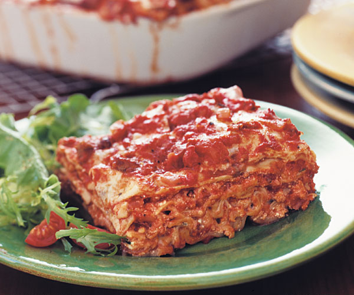

Classic Meat Lasagna

Yield: Yields three lasagne of four ample servings each.
Classic meat lasagna shows off its many layers. Make it as tall as your ingredients will allow.
- 2 Tbs. plus 1/3 cup olive oil
- 2 lb. mild (sweet) Italian sausage, casings removed and broken into pieces
- 8 cloves garlic, peeled and slightly crushed
- 2 large onions, finely chopped
- 1-1/2 cups dry red wine (such as Chianti)
- Four 28-oz. cans (or three 35-oz. cans) crushed tomatoes (about 14 cups total)
- 2 Tbs. dried oregano
- 2 tsp. dried thyme
- 1 Tbs. chopped fresh rosemary (you can substitute 2 tsp. dried, but fresh is best)
- 1 tsp. fennel seeds, crushed
- 1-1/2 tsp. kosher salt
- 1/2 tsp. freshly ground black pepper
- 1 Tbs. granulated sugar or to taste
- 3 large eggs
- 1-1/2 cups freshly grated Parmigiano-Reggiano
- 32 oz. ricotta cheese
- A large handful of fresh basil leaves, washed well and chopped
- 2-1/2 lb. fresh mozzarella cheese, sliced as thinly as possible
- 1 lb. instant (no-boil) lasagna noodles
Recipe Directions
- In a heavy based pot, heat the 2 Tbs. olive oil over medium-high heat. Add the sausage and brown it all over, breaking it up into small pieces with a wooden spoon and stirring, 10 to 12 minutes.
- Remove the sausage with a slotted spoon and set aside. Pour off most of the fat, but leave some behind for flavor.
- To the pot, add the remaining 1/3 cup of olive oil and the garlic and heat over medium-high heat until the garlic just begins to turn light brown, about 5 minutes.
- Remove and discard the garlic immediately, leaving the oil in the pot. Add the onions to the pot and cook, stirring frequently, until translucent, 5 to 6 minutes.
- Return the sausage to the pot. Add the red wine and cook until it has reduced by at least half, about 10 minutes.
- Add the crushed tomatoes and stir in the oregano, thyme, rosemary, fennel seeds, salt, pepper, and sugar. Reduce the heat to medium low and cook to blend and develop the flavors, about 30 min. Taste for seasoning. You should have about 16 cups of sauce.
- Meanwhile, in a large bowl, beat the eggs and add the Parmesan. Beat in the ricotta cheese. Season with salt and pepper and fold in the chopped basil.
- Heat the oven to 400°F
- o make three lasagne of four layers each, begin by lightly oiling three 9x9x2- or 8x8x2-inch metal or ceramic pans (disposable pans are also fine). Cover the bottom of each pan lightly with some of the sauce. Lay down a layer of pasta in each of the three pans.
- pread enough of the ricotta cheese mixture on top of the pasta to cover, about 1/2 cup. Top the ricotta with enough sauce to cover it completely, about 1/2 cup.
- Cover with another layer of pasta and ladle more sauce over that, followed by enough mozzarella cheese to cover, enough ricotta cheese to cover, and some more sauce.
- Continue with two more layers in that order: pasta, sauce, mozzarella, ricotta, and sauce.
- Finish with a layer of pasta, some sauce, some mozzarella cheese, and a final light layer of sauce. You should be able to easily get four layers into each pan; if you have extra components, go ahead and add another layer to one or more of the lasagne. Don’t worry if the height of the lasagna exceeds the pan; it settles as it bakes. Save any remaining sauce to serve with the lasagna.
- Seal the pans with aluminum foil, tented so it doesn’t stick to the cheese. Bake until the edges are bubbling and a knife inserted into the center of each lasagna comes out very hot, 40 to 50 minutes.